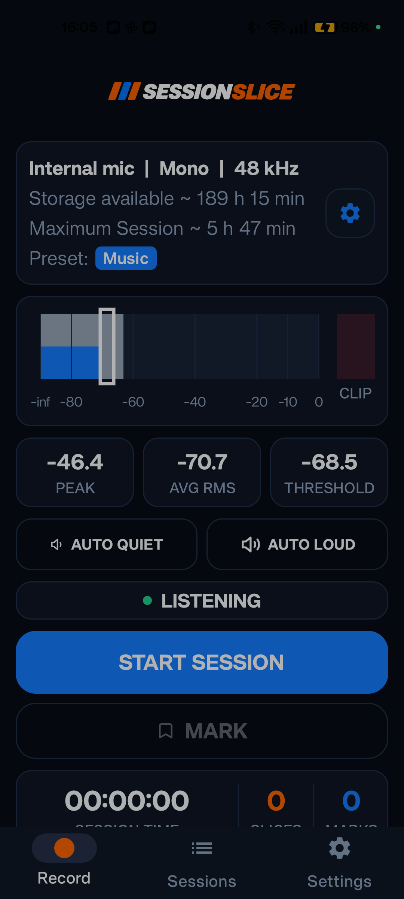
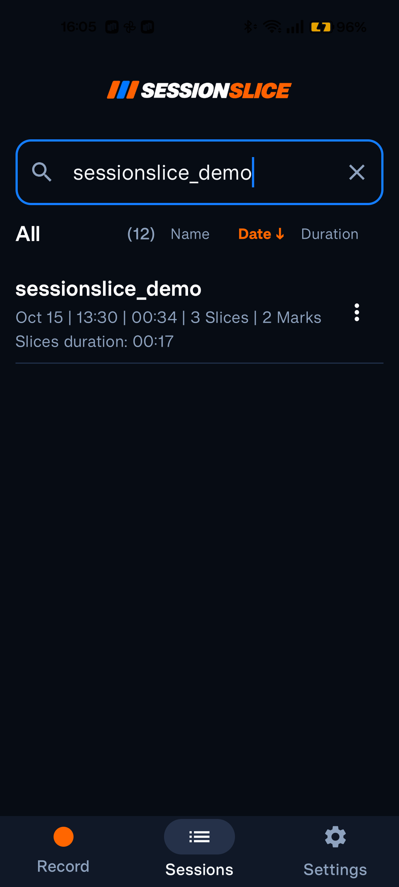
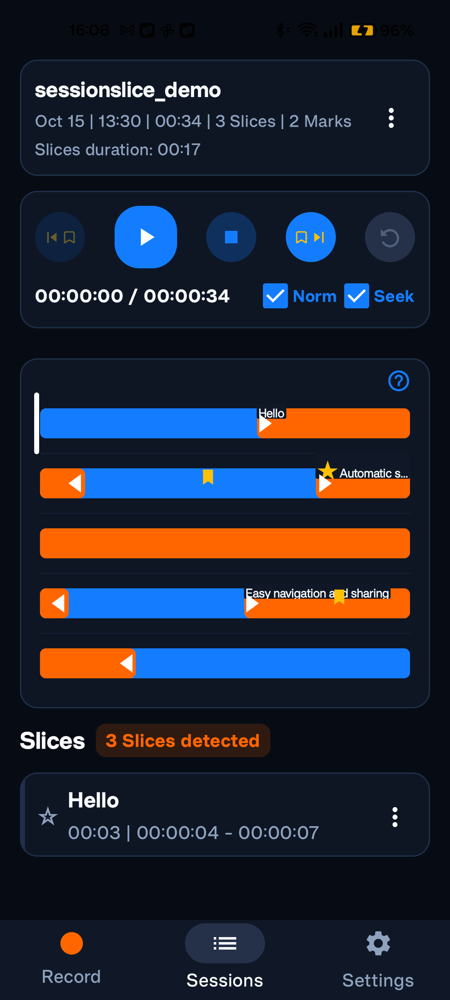

Capture the full Session
Record one continuous mono or stereo PCM master at 48 kHz or 44.1 kHz, with live level, peak, and clipping feedback.
Rehearsal recording for Android
Capture the whole rehearsal as one lossless master. SessionSlice finds each performance, then gives you the tools to refine, replay, name, mark, and export the moments worth keeping.
7 days. Every feature. Then keep SessionSlice forever with one lifetime purchase—no subscription.
One Session. Every useful moment.
SessionSlice handles the long recording and the small details without interrupting rehearsal.
Record one continuous mono or stereo PCM master at 48 kHz or 44.1 kHz, with live level, peak, and clipping feedback.
Level-based detection creates Slices automatically. Speech and Music presets help you start quickly.
Drop Marks while recording, name Slices later, and star as many best performances as you like.
Drag Slice boundaries, add missed Slices, move Marks, undo changes, loop a Slice, or Re-slice with quiet and loud references.
Search Sessions and Slice names, jump between Marks, follow playback, and use non-destructive listening normalization.
Export a complete Session or individual Slices as lossless WAV or compact, optionally normalized M4A files.
Simple access. No subscription.
Record, detect, edit, play, and export without feature limits during the full trial. When it ends, a single Google Play purchase unlocks SessionSlice permanently.
Captured from SessionSlice 1.6.7
These screens were captured directly from SessionSlice, including the bundled sessionslice_demo Session.



Google Play closed testing
SessionSlice is currently in testing. The Google Play tester build uses the production access flow, including the 7-day full-feature trial and the one-time lifetime purchase.
Use the Google account that you will use in Google Play.
Join the Google groupGoogle needs a little time to apply your tester access before the install links become available.
Open the listing in Google Play, or use the web testing link if you prefer.
Requires Android 8.0 or newer.